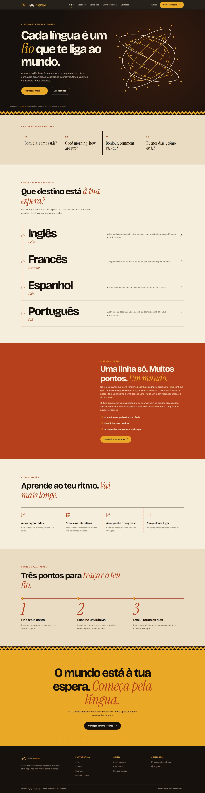
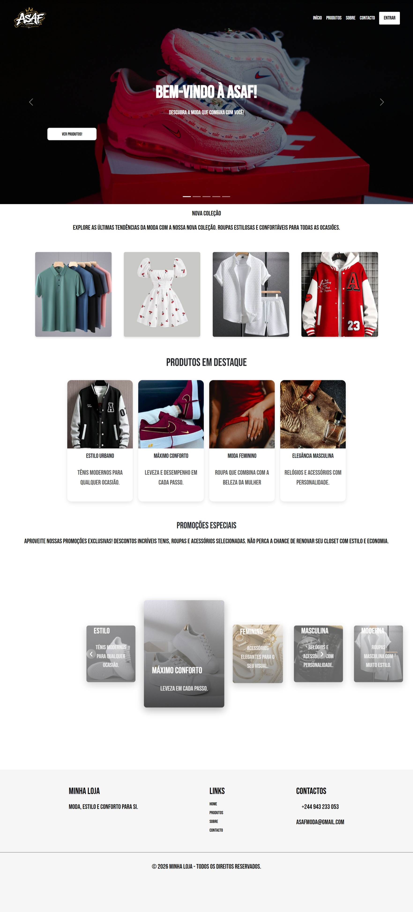
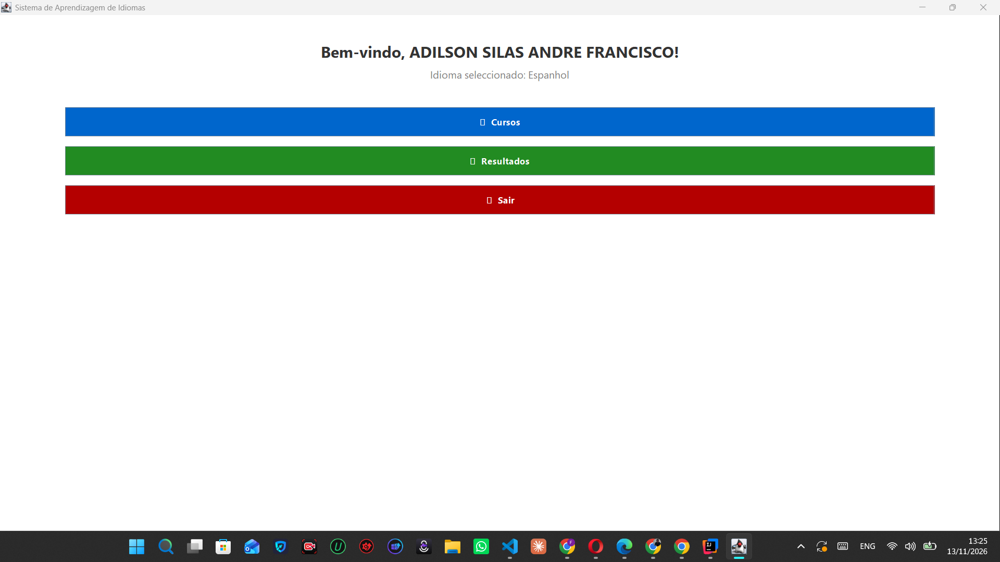

HTML5
Criação de estruturas web semânticas e organizadas.

Olá, sou o Adilson Silas
Transformo ideias em experiências digitais modernas, funcionais e intuitivas. Gosto de criar soluções que unem design, tecnologia e uma boa experiência para as pessoas.
01 const developer = {
02 nome: 'Adilson',
03 área: 'Web Dev',
04 paixão: 'Criar',
05 foco: 'Evoluir'
06 };
07 // Sempre a aprender.
01 / SOBRE MIM
Sou Adilson Silas, estudante de Engenharia Informática e desenvolvedor web apaixonado por tecnologia e inovação. Gosto de transformar ideias em soluções digitais funcionais, modernas e intuitivas.
Tenho interesse no desenvolvimento frontend, na criação de interfaces responsivas, na lógica de programação e na gestão de bases de dados. Procuro aperfeiçoar continuamente as minhas competências, explorar novas tecnologias e desenvolver projetos que resolvam problemas reais.
02 / COMPETÊNCIAS
Tecnologias e ferramentas que utilizo nos meus projetos e cujo conhecimento continuo a desenvolver.
Criação de estruturas web semânticas e organizadas.
Estilização, layouts modernos e interfaces responsivas.
Desenvolvimento de interatividade e funcionalidades web.
Construção de interfaces responsivas com componentes e layouts.
Programação orientada a objetos e desenvolvimento de aplicações.
Criação, modelação, consultas e gestão de bases de dados.
03 / PROJETOS
Uma seleção de projetos pessoais e académicos que representam o meu percurso, as minhas experiências e a minha evolução na área da tecnologia.

Plataforma web de aprendizagem de idiomas, concebida para proporcionar uma experiência intuitiva através de conteúdos educativos, cursos e atividades interativas.
Repositório em breve
Loja virtual de moda dedicada à apresentação e comercialização de roupas, calçados e acessórios, com catálogo de produtos, carrinho de compras e processo de checkout.
Repositório em breve
Aplicação desktop desenvolvida para apoiar a aprendizagem de idiomas, com interface gráfica, gestão de conteúdos educativos e integração com uma base de dados.
Repositório em breve04 / FORMAÇÃO
FORMAÇÃO ACADÉMICA
Instituto Superior Politécnico Tocoísta
Formação académica em cursoDESENVOLVIMENTO PROFISSIONAL
Desenvolvimento de competências em programação, desenvolvimento web e bases de dados através de projetos pessoais e académicos.
Evolução e aperfeiçoamento constante05 / CONTACTO
Tens um projeto em mente, uma oportunidade profissional ou simplesmente queres conversar sobre tecnologia? Estou disponível para trocar ideias, colaborar e criar soluções digitais.
Enviar uma mensagem